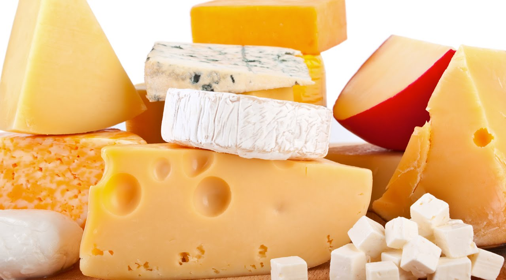

Cheese!

Types of cheeses:
- Cheddar
- Sharp And Bitter
- Best For Burgers
- Originated In England
- Mozzarella
- Soft And Moist
- Best For Pizza
- Orginated In Italy
- Swiss
- Nutty and Sweet
- Lots Of Holes
- Originated In Switzerland
- Parmesan
- Hard and Gritty
- Best For Pasta
- Originated in Italy
- Gouda
- Sweet And Dense
- Best For Crackers Or Sandwiches
- Originated In The Netherlands
- Feta
- Salty And Tangy
- Best For Salads And Soups
- Originated In Greece
- Brie
- Creamy And Earthy
- My Favourite Cheese
- Originated In France
- Provolone
- Mild And Sweet
- Used Lots When Melted
- Originated In Italy
How is cheese made??? ---> video